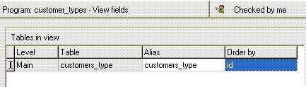
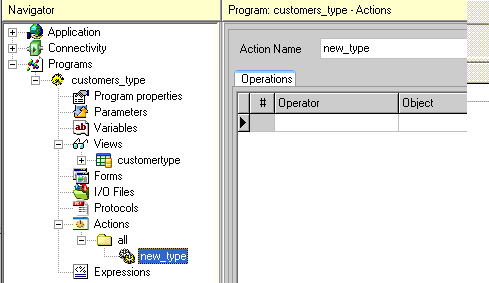
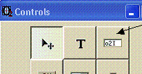
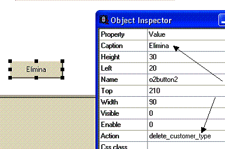

0.7 Un programma di interazione con i dati di una tabella
Questo capitolo mostra come creare un semplice programma di browsing su una
tabella.
Obiettivi
Al termine di questo capitolo il programmatore sarà in grado di:
Creare un programma di browsing
Navigare all’interno della definizione di una view
Impostare la tabella principale (main table) di una view
Definire i campi richiesti
Disegnare un’interfaccia di base per navigare sui dati
Controllare la sintassi del programma ed eseguirlo
Introduzione
Arrivati a questo punto abbiamo definito i modelli e le tabelle per l’applicazione.
In questo capitolo andremo a creare un semplice programma di browsing,
nel caso specifico un programma per la consultazione, la modifica e l’inserimento dei dati
nella tabella "Customers_type" e lo faremo ponendo l’attenzione soprattutto su come il
programma è suddiviso, tralasciando per il momento alcuni dettagli che saranno approfonditi
nei successivi capitoli.
Il processo si divide in quattro fasi:
Definizione della view (vista sul database)
Definizione delle operazioni per l’esecuzione delle azioni di insert, delete, update
Creazione della Form (interfaccia)
Inserimento del programma a menu
0.7.1I programmi
Per creare un nuovo programma, selezionare Programs dal menu
Navigator.
Posizionarsi su Programs e premere INVIO
Digitare il nome del programma (stringa senza spazi) e confermare
Per selezionare un programma, sia quello appena creato che qualsiasi altro già
presente nel repository dei programmi:
Esplodere il menu Programs dal Navigator
Selezionare il programma da modificare
Premere INVIO
Come si può vedere il programma è suddiviso logicamente in 9 aree:
Program properties
Parameters
Variables
Views
Forms
I/O Files
Protocols
Actions
Expressions
Ogni area a sua volta potrà contenere altre sottoaree che analizzeremo
approfonditamente andando avanti nel corso. In questa fase ci limiteremo a creare lo
stretto necessario per raggiungere il nostro obiettivo:
creare un semplice programma di interfaccia con una singola tabella, i
"Customer_types".
0.7.2Le view
Per creare una nuova view:
Selezionare l’area View dal Navigator e premere INVIO
Digitare il nome della view (stringa senza spazi) e confermare
Per accedere ad una view, sia a quella appena creata che ad eventuali altre view del
programma, esplodere la voce View dal Navigator e dopo aver selezionato la
view interessata premere INVIO per accedere alla sua definizione.
Tabelle della view
Dopo aver creato una nuova view andiamo nell’area Tables in view per dichiarare
quali tabelle prenderanno parte nella query.
Nel caso specifico aggiungiamo un’unica tabella ("Customer_types") e la dichiariamo
Main table della view.
In questo momento il programmatore non si preoccupi più del dovuto se non
comprende il significato delle altre voci all’interno del repository, saranno abbondantemente
riprese nei successivi capitoli.

Campi select e campi calculated
Una volta dichiarato la tabella principale della view possiamo accedere nell’area sottostante
Select and calculated fields per definire quali campi della tabella vogliamo utilizzare
all’interno di questo programma.
Per aggiungere un nuova riga a questa lista procedere come segue per tutti i campi da
selezionare:
Creare una nuova riga F4
F5 (zoom) dalla colonna Type e selezionare il tipo
"Select"
F5 (zoom) dalla colonna From table e selezionare
"Customer_types"
F5 (zoom) dalla colonna Field e selezionare il campo della
tabella
Confermare la riga (FrecciaGiù) in modo da attribuire il valore alla colonna
Alias
Ripetere i punti 2-3-4-5 per tutti i campi della tabella, ottenendo un elenco come
questo:
Proprietà della view
Ogni view ha un’area, dove definire eventuali proprietà avanzate, a cui si accede
selezionando dal Navigator l’elemento View Properties sotto la view
interessata.
Nel nostro caso dobbiamo modificare la proprietà Number of requested
records ed impostarla ad "1".
Questa proprietà identifica il numero di record che saranno richiesti di volta in volta
al server di database e, nel caso di interfacce di tipo screen, dove viene
letto un record alla volta, deve essere impostato ad "1" (default = "10").
Questi argomenti saranno trattati a fondo nei capitoli successivi
0.7.3Definizione di azioni e operazioni di modifica dei dati
Le action (azioni) sono in sostanza tutta la componente esecutiva di un programma
o2.
Ogni action è composta da una serie di operations (operazioni) che vengono eseguite
da o2runtime nell’ordine in cui sono state definite.
In questo momento il programmatore non si preoccupi più del dovuto se non
comprende il significato delle altre voci all’interno del repository: saranno
abbondantemente riprese nei successivi capitoli.
Per creare una nuova action:
Selezionare l’area Actions dal Navigator e premere INVIO
Digitare il nome della action (stringa senza spazi) e confermare
Per accedere ad una action, sia a quella appena creata che ad eventuali altre action
del programma, esplodere la voce Actions dal Navigator e, dopo aver
selezionato la action interessata, premere INVIO per accedere alla sua
definizione.

Per creare una nuova operazione:
Creare una nuova riga nella tabella Operations (F4)
Selezionare dal combobox l’operatore opportuno (nel nostro caso Recordset)
F5 (zoom) dalla colonna Object per aprire l'interfaccia di
definizione specifica per l’operatore scelto Nel nostro caso, visto che stiamo definendo l’azione "new_customer_type" sceglieremo
l’opzione "Prepare insert" (prepara il recordset per l’inserimento di un nuovo record)
Conferma della riga (FrecciaGiù)
Esercitazione
0.7.4Creazione della form (interfaccia utente)
In questa fase andremo a creare la rappresentazione visuale del programma generato
nelle fasi precedenti.
Per fare questo, il programmatore genererà una form in o2architect che produrrà
l’interfaccia per l’utente finale.
In questo momento il programmatore non si preoccupi più del dovuto se
non comprende il significato delle altre voci all’interno del repository, saranno
abbondantemente riprese nei successivi capitoli.
Per creare una nuova form:
Selezionare l’area Forms dal Navigator e premere INVIO
Accedere alla tabella delle form
Creare una nuova riga F4
Digitare il titolo nella colonna Title
Premere il pulsante Design per accedere all’editor visuale delle form
Il programmatore si trova di fronte una finestra denominata Design form che
rappresenta lo spazio totale disponibile (la finestra del browser).
Al suo interno:
la form "Customer_types" che sarà la form del nostro programma
la palette dei controlli o2
l’Object inspector strumento con il quale si attribuiscono le proprietà ai
controlli
Il programma che stiamo facendo deve consentire la completa manutenzione della tabella
"Customer_types", per cui devono essere definiti i controlli che accolgano i valori dei campi della
tabella. Scegliamo dei semplici controlli Edit text.
Aggiungere controlli ad una form
Per procedere con l’inserimento dei controlli sulla form procedere come
segue:
Selezionare il controllo dalla palette (nel nostro caso il controllo Edit)

Posizionare il controllo sulla form "Customer_types" semplicemente cliccando
sul punto voluto
Utilizzare adesso l’Object inspector per definire la proprietà Field
(campo associato al controllo) e selezionare il campo “id” dalla view
“customer_types”
Ripetere i punti 1-2-3 anche per il campo “description” in modo da ottenere
questo risultato:
Aggiungere un controllo di navigazione sulla vista (DBNavigator)
Procediamo adesso inserendo sulla form un oggetto di tipo DBNavigator
.
Questo controllo fornisce all’utente finale la capacità di muoversi all’interno
del recodset semplicemente cliccando sui bottoni (First row –Previous
page – Previous row – Next row - Next page - Last
row)
Proprietà obbligatoria: la View. Impostiamo la proprietà View
del DBNavigator selezionando la view “customer_types”
Aggiungere dei pulsanti di comando
Per scatenare le azioni sul recordset che abbiamo definito nella precedente fase
dobbiamo inserire sulla form 3 controlli di tipo Button.
Dopo aver posizionato l’oggetto Button sul form “Customer types” procedere
con la definizione delle proprietà al momento indispensabili:
Caption
Action
La proprietà Caption contiene il testo che comparirà sul pulsante; la proprietà
action, invece, il nome dell’azione che sarà invocata al click sul pulsante.
Esempio: attribuzione delle proprietà Caption e Action al pulsante
“Elimina”

Ripetere l’operazione per gli altri due pulsanti: “Nuovo” e “Salva” in modo da ottenere
il seguente risultato:
Salvataggio del programma e pubblicazione
Adesso il programma è terminato: dobbiamo salvarlo e pubblicarlo prima che sia
possibile inserirlo in un menu.
Salvataggio modifiche dal Design form
Uscire dal Design form tramite il pulsante di chiusura del form e alla richiesta di salvataggio confermare.


 e alla richiesta di salvataggio confermare.
e alla richiesta di salvataggio confermare.